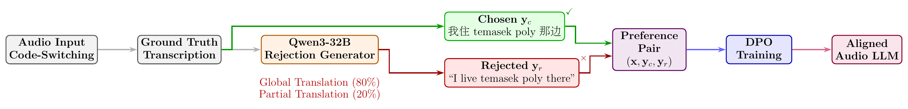

Language omission
The model outputs only one language and drops the other.
GT我住 temasek poly 那边 Out我住那边
Interspeech 2026
Corresponding author
TL;DR
Multilingual Audio LLMs often fail on English-Mandarin code-switching speech: they drop one language, translate instead of transcribe, or hallucinate. We train three Audio LLMs with Direct Preference Optimization (DPO) on pairs in which the chosen response keeps the mixed-language transcription and the rejected response imitates a failure. DPO shifts the models toward verbatim mixed-language output, with relative MER reductions of up to 89.6% in-distribution and 20.0% out-of-distribution. We read this as DPO eliciting a capability that the models already have.
Abstract
Audio large language models (Audio LLMs) exhibit systematic failures in transcribing code-switching speech despite strong multilingual capabilities. Focusing on English-Mandarin, we identify three failure modes: language omission, translation-instead-of-transcription, and hallucination. We apply Direct Preference Optimization (DPO) to align models, constructing preference pairs in which chosen responses preserve mixed-language content while rejected responses mimic failure patterns. Training three Audio LLMs on 100K pairs (570 hours), we observe consistent behavioral shifts: models learn to preserve language composition rather than translating when prompted for transcription. This alignment yields MER reductions up to 89.6% (in-distribution) and 20.0% (out-of-distribution). Our findings suggest DPO can effectively elicit correct code-switching transcription behavior from multilingual Audio LLMs.
The problem
When we ask for a transcription of code-switching audio, even models trained with code-switching data fail in three systematic ways. The examples below are the ones in the paper.
The model outputs only one language and drops the other.
GT我住 temasek poly 那边 Out我住那边
The model translates the mixed-language content into one language.
GT我们都应该 pursue a healthy lifestyle Out我们都应该追求健康的生活方式
The model generates repeated or fabricated content.
GT我们二月多有 valentine's day Outah month... (×250)
Method
The chosen response is the ground-truth code-switching transcription. Qwen3-32B rewrites the same transcription into a rejected response that imitates a failure. Vanilla DPO then raises the likelihood of the chosen response and lowers that of the rejected one, relative to the frozen base model.

All content of one language is translated into the other, which imitates translation-instead-of-transcription.
What grade are you? 真的很好哎… → 你几年级？真的很好哎…
Only short spans are translated, which imitates partial language omission.
It's so boring and dull → It's so 无聊 and dull
One epoch on 8 H100 GPUs with 20 English and 20 Chinese transcription prompts. Evaluation uses a held-out prompt, “Please transcribe this speech.”
Both strategies target translation failures only. We do not generate rejected samples for omission of content or for hallucination, but DPO still reduces all three failure modes.
Results
We train MERaLiON-2-3B, Phi-4-multimodal-instruct and Qwen2-Audio-7B-Instruct. SEAME dev_sge and dev_man are out-of-distribution, because no SEAME data is in training. EMILIA-test and CS-Dialogue-test are held-out portions of the training sources.
| model | benchmark | Base | DPO | ΔRel |
|---|---|---|---|---|
| MERaLiON-2-3B | SEAME dev_sge | 32.38 | 31.75 | −2.0% |
| SEAME dev_man | 25.79 | 25.61 | −0.7% | |
| EMILIA | 32.01 | 30.41 | −5.0% | |
| CS-Dialogue | 25.41 | 22.58 | −11.1% | |
| Phi-4-multimodal-instruct | SEAME dev_sge | 69.97 | 61.09 | −12.7% |
| SEAME dev_man | 51.97 | 46.63 | −10.3% | |
| EMILIA | 70.98 | 7.38 | −89.6% | |
| CS-Dialogue | 49.61 | 10.65 | −78.5% | |
| Qwen2-Audio-7B-Instruct | SEAME dev_sge | 95.11 | 85.52 | −10.1% |
| SEAME dev_man | 72.89 | 58.30 | −20.0% | |
| EMILIA | 44.70 | 42.08 | −5.9% | |
| CS-Dialogue | 38.91 | 31.40 | −19.3% |
Mixed Error Rate (MER, %, lower is better): character level for Chinese, word level for English. ΔRel is the relative change from Base to DPO. Each number comes from a single training run.
Small SEAME gains (0.7–2.0%), because the model already saw extensive code-switching data in supervised fine-tuning. CS-Dialogue still improves by 11.1%.
The base model often translates or repeats itself. One epoch of DPO lowers MER on EMILIA from 70.98% to 7.38%.
A 20.0% relative gain on SEAME dev_man, the largest out-of-distribution gain, and 5.9–19.3% in-distribution. Trained with LoRA.
Qualitative examples
After DPO, the models keep the mixed-language pattern and produce more stable transcriptions. One example for each failure mode, from the paper.
GT我们都应该 pursue a healthy lifestyle Base我们都应该追求健康的生活方式 DPO我们都应该 pursue a healthy lifestyle MER 100% → 0%
GT我们二月多有 valentine's day Baseah month ah month ah month... (×250) DPO二月多有 Valentine's Day MER 56.89% → 0.33%
GT我住 temasek poly 那边 Base我住达马士科波利那边 (transliterated) DPO我住 tamasek poly 那边 MER 100% → 17%
Data
The paper trains on 100,766 pairs (566.8 hours): 13,795 pairs (77.3 hours) from CS-Dialogue and 86,971 pairs (489.5 hours) from EMILIA. CS-Dialogue gives natural intra-sentential switches and concatenated EN and CN utterances from the same conversation. EMILIA gives synthetic inter-sentential switches from concatenated English and Chinese clips.
| dataset | train | test |
|---|---|---|
| CS-Dialogue-DPO | 13,795 | 359 |
| Emilia-DPO | 86,971 | 1,000 |
Hugging Face splits. Each row has four columns: id, audio, chosen
(the ground-truth transcription) and rejected (the failure-style rewrite).
from datasets import load_dataset
ds = load_dataset("ngqtrung/cs-dialogue-dpo")
print(ds["train"][0]["chosen"])The audio derives from CS-Dialogue (Zhou et al., 2025) and Emilia (He et al., SLT 2024). Users must follow the licence terms of the original datasets.
Citation
@inproceedings{nguyen2026codeswitchdpo,
title = {Direct Preference Optimization for {English-Mandarin} Code-Switching Speech Recognition in Audio {LLMs}},
author = {Nguyen Quang, Trung and Won, Cheng Yi Lewis and Pham, Minh Duc and He, Yingxu and Sun, Shuo and Aw, Ai Ti},
booktitle = {Proc. Interspeech 2026},
year = {2026},
doi = {10.21437/Interspeech.2026-110}
}